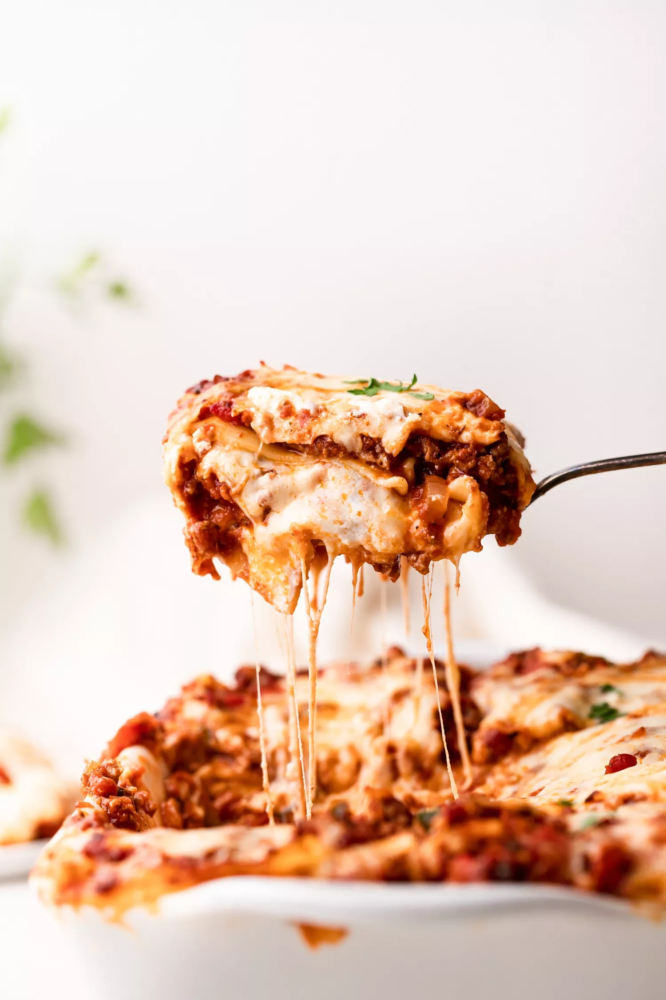

Lasagne

Picture of lasagne
Description
For this recipe, we are essentially making a thick, meaty tomato sauce and layering that with noodles and cheese into a casserole.
Ingredients
For the meat sauce
- 2 teaspoons extra virgin olive oil
- 1 pound ground beef chuck
- 1/2 medium onion, diced
- 1/2 large bell pepper (green, red, or yellow), diced
- 2 cloves garlic, minced
- 1 (28-ounce)can good-quality tomato sauce
- 3 ounces tomato paste (half a 6-ounce can)
- 1 (14 ounce) can crushed tomatoes
- 2 tablespoons chopped fresh oregano, or 2 teaspoons dried oregano
- 1/4 cup chopped fresh parsley (preferably flat leaf), packed
- 1 tablespoon Italian seasoning
- 1 pinch garlic powder and/or garlic salt
- 1 tablespoon red or white wine vinegar
- 1 tablespoon to 1/4 cup sugar (to taste, optional)
- Salt
To assemble the lasagne
- 1/2 pound dry lasagna noodles (requires 9 lasagna noodles - unbroken)
- 5 ounces ricotta cheese
- 1 1/2 pounds (24 ounces) mozzarella cheese, grated or sliced
- 1/4 pound (4 ounces) freshly grated Parmesan cheese
Steps
-
Put pasta water on to boil
some text here
- Brown the ground beef
- Cook the bell pepper, onions, and garlic; add back the beef
- Make the sauce
- Boil and drain the lasagna noodles
- reheat the oven to 375°F
- Assemble the lasagne
- Bake
- Cool and serve
Original recipe
Home